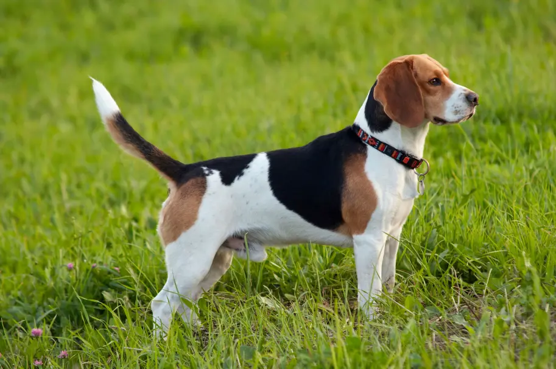

Este precioso grandullón se llama Tembo, y aunque su aspecto pueda parecer imponente a primera vista, es un perrito lleno de nobleza, dulzura y un corazón gigante. Con las personas que no conoce puede mostrarse algo reservado, pero en cuanto entra en confianza, sobre todo con los más pequeños de la casa, se transforma en el más juguetón y protector de los compañeros. Tembo es un perro educado, equilibrado y muy cariñoso. Le encanta jugar, sobre todo si hay niños cerca, y se le da genial seguir normas y convivir en familia. Tiene esa combinación perfecta de carácter fuerte y ternura, que lo convierte en un compañero ideal para un hogar que valore tanto su lealtad como su lado juguetón. Lo más bonito de su historia es cómo llegó a nosotros: una mañana, apareció frente a la puerta del albergue, solo, tranquilo, como si supiera exactamente a dónde tenía que ir. Venía buscando amigos, cariño y algo de comida… y desde entonces nos ha regalado todo su afecto sin pedir nada a cambio. Tembo no solo busca una familia, busca un lugar donde ser querido de verdad. Donde su fuerza sea valorada y su ternura, bienvenida. Es un perro leal, atento y con mucho amor por dar. Adoptar a Tembo es abrir la puerta a un amigo fiel, protector y juguetón, que ha elegido confiar en los humanos a pesar de todo. ¿Le das tú esa oportunidad que tanto merece?
